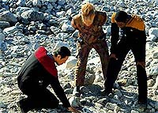
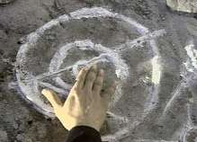
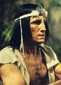
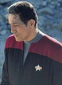
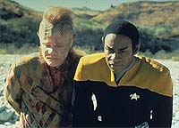
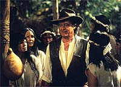

|
MANCHETE
DO EPISDIO
História traz insights sobre cultura
indgena e ilumina passado
de Chakotay
Episódio
anterior | Prximo
episódio
Sinopse:
Data Estelar: desconhecida.
 Enquanto
Kes repreende o Doutor por sua falta de compaixo em relao
alferes Wildman, que está grvida, Chakotay surpreende-se ao
encontrar em uma lua smbolos muito semelhantes aos que viu quando
jovem numa floresta da Amrica Central. Naquela época, estava
acompanhando o pai, Kolopak, em uma jornada para descobrir a verdade
sobre seus ancestrais.
Intrigado, Chakotay recebe permissão para liderar um grupo
avanado ao local. Tentam se transportar para o que parece ser um
lugar desabitado, mas os sistemas de transporte no operam.
medida que se preparam para aterrissar uma nave auxiliar, o
comandante lembra-se de quando tinha 15 anos, quando desapontou o
pai por no abraar as tradies de sua tribo. As memrias
intensificam-se enquanto o grupo explora a superfcie. Mas antes de
Chakotay ser capaz de estabelecer comparaes, Neelix ferido
por um falco, e em seguida Tuvok encontra o que parece ser uma
vila abandonada.
 Temendo
que o grupo avanado tenha assustado os nativos, Chakotay manda
Tuvok e B'Elanna baixarem suas armas, em um gesto de confiana.
Porm, o gesto parece inspirar uma violenta tempestade. Tuvok e
Torres so transportados de volta Voyager, mas Chakotay
deixado para trs, inconsciente, ao ser atingido por um galho.
Janeway incapaz de encontrar seu primeiro-oficial, apesar de
várias tentativas. como se algo no planeta tentasse impedi-los
de descer. Ao tentar entrar na atmosfera, a Voyager engolida por
um ciclone, que Tuvok acredita ter sido criado pelos nativos para
espantar intrusos.
Quando Chakotay se recupera, encontra os habitantes desse mundo
estranho e fica surpreso ao descobrir que eles falam a lngua de
seus ancestrais. Eles reconhecem o smbolo tatuado em sua testa,
que ele usa em honra a seu pai, que também o usava em honra aos
antepassados. Os habitantes dizem que conheceram aqueles ancestrais
quando visitaram a Terra há 45 mil anos.
 Chakotay,
então, percebe que esses so os "Espritos do Cu",
nos quais o conhecimento do seu povo se baseia. Os alienígenas
visitaram a Terra milnios depois e descobriram que praticamente
todos os traos daquelas pessoas haviam sumido, provavelmente
destrudos por outros humanos. Eles dizem a Chakotay que atacaram a
Voyager e sua tripulao com tempestades porque temiam que fossem
inimigos na tentativa de destru-los também. Chakotay lhes
assegura de que os humanos mudaram muito desde aquela época e que
no lhes queriam mal algum.
As tempestades somem e a nave salva bem a tempo. Depois que os
alienígenas do a Chakotay alguns dos minerais de que a Voyager
precisava, eles dizem adeus, deixando-o com a sensao de que
recuperou a conexão com seu povo --e com seu pai.
Comentrios:
 Em
"Tattoo", finalmente temos uma ideia do passado de
Chakotay. A história totalmente centrada no personagem e fornece
dados que nos permitem conhecer um pouco mais sobre o comandante da
Voyager. Porm, há algumas decepes.
Por exemplo, saber que no passado ele no compartilhava das
tradies que agora tanto preza muda muito a viso criada por
todos. E, afinal, de que tribo ele vem? Nem nesse episódio ou em
nenhum ponto da série os produtores especificam isso. Claro,
estavam explorando a Amrica Central, mas os smbolos que a equipe
de produção escolheu para a série lembram muito a arte Anasazi,
uma tribo norte-americana.
Detalhes parte, há outras coisas a destacar. muito
interessante a hiptese de que há 45 mil anos uma espcie
alienígena avanada visitou a Terra, mas afirmar que foram eles os
responsveis pelo dom da memria e lngua subestimar um pouco
a inteligncia humana e alterar todo o curso da História conhecida
(alis, algo que Voyager faz constantemente).
 Parece
at uma verso Jornada de "Eram os Deuses
Astronautas?", livro escrito pelo jornalista suo Erich von
Daniken que prope a hiptese de que alienígenas visitaram a
à Terra em um passado remoto e ajudaram nossos ancestrais a construir
feitos monumentais, como as pirmides do Egito e os traos
gigantes na plancie de Nazca, no Peru.
Apesar dos exageros, o episódio tem um enfoque muito bom. Novamente
temos um roteiro inspirado no desenvolvimento de um personagem e
nada da famigerada tecnobaboseira (a no ser pelo fato de a nave
sobreviver a um ciclone, interrompido subitamente). A interao
entre o comandante e a capitã mostra o quanto os personagens estão
prximos e cada vez mais humanos.
E por falar nisso, no podemos esquecer de um dos pontos altos do
episódio, quando o hilrio Doutor implementa algumas
modificaes em seu programa. Kes está fantstica --e
diablica-- neste segmento, brilhando como em poucos momentos
durante a série.
 A
tortuosa Ocampa adicionou uma certa alterao no holograma sem
falar nada a respeito e ensinou-lhe uma bela lio sobre como
tratar os pacientes em sofrimento! Tuvok e Neelix também tm uma
conversa interessante na superfcie da lua. Aparentemente, ambos
tm um fascnio por orqudeas...
A história fechada com chave de ouro quando Chakotay se redime
com o pai e sua tribo. interessante a relao que se faz entre
os poderes alienígenas --que dominam com incrvel preciso as
foras da natureza-- e as crenas indgenas, também to
apoiadas no mundo natural. Por fim, há todo um ar espiritual e
humano em torno do episódio, que pode ser considerado como um dos
pontos altos da temporada.
Citaes:
Doutor - "I don't have a
life... I have a program."
("Eu no tenho uma vida... tenho um programa.")
Trivia:
 Sem contar a no-creditada reviso do
roteiro de "Parturition", "Tattoo"
foi a primeira contribuio do produtor-executivo Michael Piller
para a segunda temporada de Voyager.
Sem contar a no-creditada reviso do
roteiro de "Parturition", "Tattoo"
foi a primeira contribuio do produtor-executivo Michael Piller
para a segunda temporada de Voyager.
O personagem secundrio de talvez maior
destaque da Voyager reaparece neste episódio. Trata-se da
alferes Samantha Wildman (Nancy Hower), introduzida no episódio "Elogium",
em que descobre estar grvida. Aqui a vemos com a gravidez mais
avanada e ainda no segundo ano da série nasce seu beb.
Em um batepapo de Internet:
Pergunta - Houve uma cena "muito especial" no
episódio "Tattoo", uma que suas fs gostaram
mais. Você a fez pessoalmente ou usou um dubl?
Robert Beltran - A cena tornou-se possvel graas ao meu
dubl, ao editor e a uma afiada caneta tinteiro. tudo o que
tenho a dizer sobre isso!
Ficha
técnica:
História de Larry Brody
Roteiro de Michael Piller
Direo de Alexander Singer
Exibido em 06/11/1995
Produção: 025
Elenco:
Kate Mulgrew como
Kathryn Janeway
Robert Beltran como Chakotay
Roxann Biggs-Dawson como B'Elanna Torres
Robert Duncan McNeill como Tom Paris
Jennifer Lien como Kes
Ethan Phillips como Neelix
Robert Picardo como Doutor
Tim Russ como Tuvok
Garrett Wang como Harry Kim
Elenco convidado:
Henry Darrow como Kolopak
Richard Fancy como alienígena
Douglas Spain como Chakotay jovem
Nancy Hower como alferes Wildman
Richard Chaves como Chefe
Joseph Palmas como Antonio
Episódio
anterior | Prximo
episódio
|